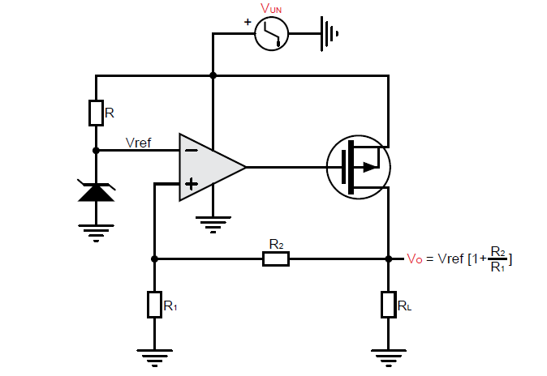
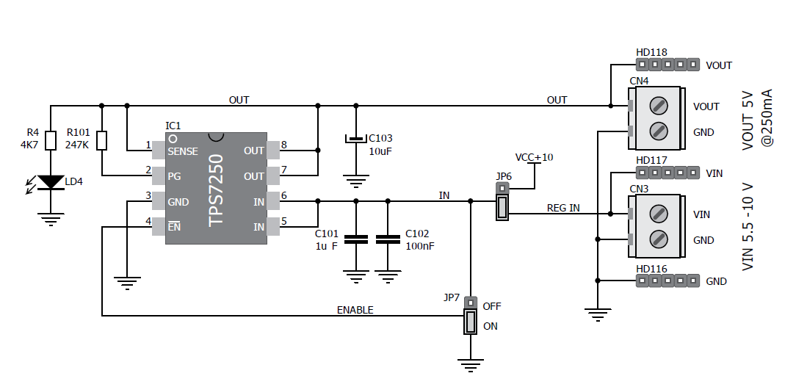
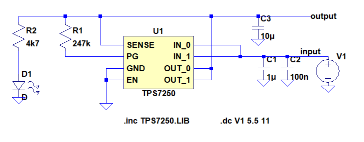
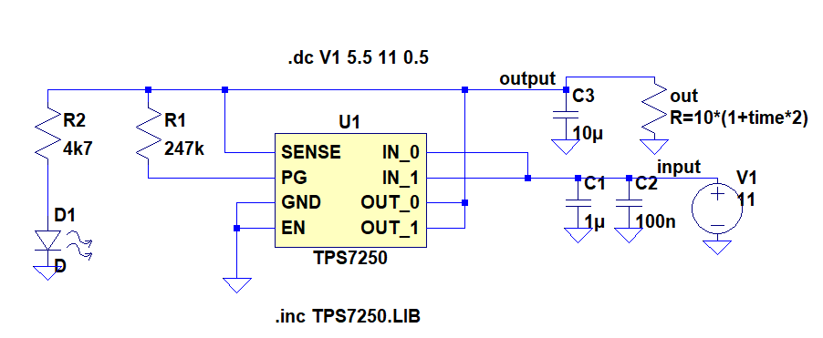

Parameterstudie eines LDO’s¶
Kurze Theorie und Motivation¶
Ziel dieses Experiments ist es, die Parameter des Low Dropout Regulator (LDO) IC TPS7250 zu verstehen. Der TPS7250 ist ein Linearregler von Texas Instruments und kann einen Ausgangsstrom von 100 mA bei einer festen Ausgangsspannung von 5 V liefern. Er zeichnet sich aus durch einen niedrigen Ruhestrom, geringes Rauschen, hohe PSRR, schneller LDO-Start mit ausgezeichnetem Einschwingverhalten. Der Versorgungsspannungsdurchgriff, (Power supply rejection ratio) gibt an, wie stark sich die Ausgangsspannung eines Verstärkers ändert, wenn sich die Versorgungsspannung verändert. Die Dropout-Spannung definiert als die Differenz zwischen den Eingangs- und den Ausgangsspannungen zu dem Punkt, zu dem ein weiterer Abfall der Eingangsspannung dazu führt, dass die Regelung der Ausgangsspannung fehlschlägt. Der Unterschied zu anderen Spannungsreglern ist die minimal erforderliche Differenz zwischen Ein- und Ausgangsspannung. Diese liegt bei dem LDO bei 0,1 V bis 1 V. Bei anderen Reglern liegt diese bei 1,5 V bis 3 V.
Funktionsweise¶
{##11_fig_01 .align-center}
Der LDO besteht im Prinzip aus einer Referenzspannung, einem Operationsverstärker, einem Durchgangselement und einem Widerstand am Ausgang. Eine einfache Referenzspannungsquelle kann mit einem Widerstand, sowie einer Z-Diode erzeugt werden. Als Durchgangselements wurde ein MOSFET gewählt. Er ist dafür da, die Ausgangsspannung durch Änderung des Kanalstromes anzupassen. Er zeichnet sich dadurch aus, dass er eine kleinere Dropout-Spannung hat. Da es sich bei dem PMOS-Durchlasselement um ein spannungsgesteuertes Gerät handelt, ist der Ruhestrom sehr niedrig (maximal 300 µA) und über den gesamten Bereich des Ausgangslaststroms (0 mA bis 200 mA) stabil. Der Operationsverstärker vergleicht die Spannung, welche durch den Spannungsteiler am Ausgang gebildet wird, mit einer Referenzspannung. Je nach Eingangsspannungsdifferenz stellt sich eine höhere oder niedrigere Ausgangsspannung am Operationsverstärker ein, so dass die Spannung zwischen Gate und Source des Transistors anwächst oder kleiner wird. Dadurch fließt mehr oder weniger Strom zum Regler Ausgang.
Aufbau der Schaltung¶
{##11_fig_02 .align-center}
-Eingangsspannung: 5,5-11V
-Ausgangsspannung: 5V
-Der Kondensator C102 verbessert die Übergangfunktion des Reglers.
-Der Kondensator C101 hilft, die Störungen am Eingang zu reduzieren, wenn die Zuleitungen zu lang sind.
-Der Kondensator C103 am Ausgang dient als Speicher und definiert meist auch die Bandbreite bzw. die Reaktionszeit des LDO.
-Die Diode zeigt, dass der Chip Funktionsfähig ist.
Aufgabe¶
Ermitteln der Leitungsregelung: Die Ausgangsspannung als Funktion der Eingangsspannung für eine feste Ausgangslast.
Unter Leitungsregelung versteht man die Änderung der Ausgangsspannung bei einer vorgegebenen Änderung der Eingangsspannung. Bei linearen Spannungsreglern sollte die Ausgangsspannung möglichst unabhängig von der Eingangsspannung sein. In der Praxis existiert jedoch eine kleine Abhängigkeit zwischen der Ein- und der Ausgangsspannung. Diese Abhängigkeit hängt stark vom Verstärkungsfaktor des Operationsverstärkers ab. Bei der Wahl des Verstärkungsfaktors muss darauf geachtet werden, dass die Verstärkung nicht zu groß ist. Ein zu großer Verstärkungsfaktor kann die Stabilität des Reglers beeinflussen.
Ermitteln der Lastregelung: Lastregelung wird definiert, als die Änderung der Ausgangsspannung bei einer vorgegebenen Laständerung.
Wie bei der Leitungsregelung muss ein Regler auch bei einem Lastwechsel in der Lage sein, eine konstante Ausgangsspannung zur Verfügung zu stellen. Dieser Strom wird aber nicht immer konstant bleiben und schwanken.
Leitungsregelung: Schaltungsaufbau - Simulation¶
Mithilfe der Software LTSpice XII ist es möglich, den Schaltungsaufbau
zu simulieren. Die Schaltung wird hierbei nach dem Schema aus
11_fig_02{.interpreted-text role=”numref”} entworfen.
{##11_fig_03 .align-center}
Das Model für den TPS7250 Baustein wurde von der Texas Instrumens Homepage gedownloadet. Die Eingangsspannung wird von 5,5 Volt bis 11 Volt in 0,5 Volt Schritten gesweept.
Leitungsregelung: Vergleich Messung mit Simulation¶
Nachdem die Simulationen für die Schaltung durhcgeführt sind, werden die Messungen am Texas Instruments Board durchgeführt. Hierdurch kann ein klarer Vergleich zur Simulation hergestellt werden.
 {##11_fig_04
.align-center}
{##11_fig_04
.align-center}
Die 11_fig_04{.interpreted-text role=”numref”} zeigt das Verhältnis
der Spannungen \(V_{in}\) zu \(V_{out}\). Die Messung wurden jeweils für
eine große Last(1kohm), eine kleine Last(20ohm) und ohne Last
druchgeführt. Die Simulation erfolgte auch ohne Last. Anhand der Kurven
erkennt man, dass die Spannungsregelung für die kleine Last nicht im
gewünschten Bereich arbeitet, weil die Ausgangsspannung unter 5 Volt
liegt, für die anderen Lasten erfüllt der Spannungsregler seine
Funktion.
Lastregelung: Schaltungsaufbau - Simulation¶
{##11_fig_05 .align-center}
Für die Lastregelung wird die LT-Spice schaltung minimal verändert. Um eine Kontinuierliche Last am Ausgang zu erzeugen, wird die Zeitvariable “time” eingefügt. Die Last am Ausgang wird also mit vortlaufender Zeit immer größer.
Lastregelung: Vergleich Messung & Simulation¶
 {##11_fig_06
.align-center}
{##11_fig_06
.align-center}
Die Kurve der Simulation zeigt, das der Spannungsregler die 5 Volt am Ausgang bis zu einem Strom von 100mA halten kann. Bei einem höheren Strom wird die 5 Volt Ausgangsspannung unterschritten. In der Praxis ist der Regler sogar ein bisschen besser, da er die Ausgangsspannug bis zu einem Ausgangsstrom von 110mA halten kann.